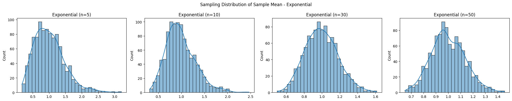
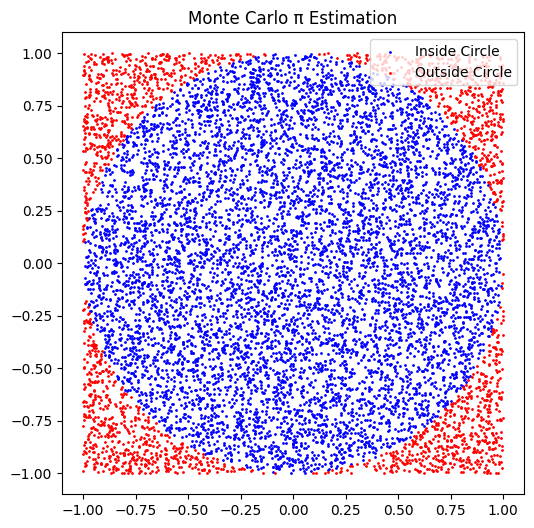
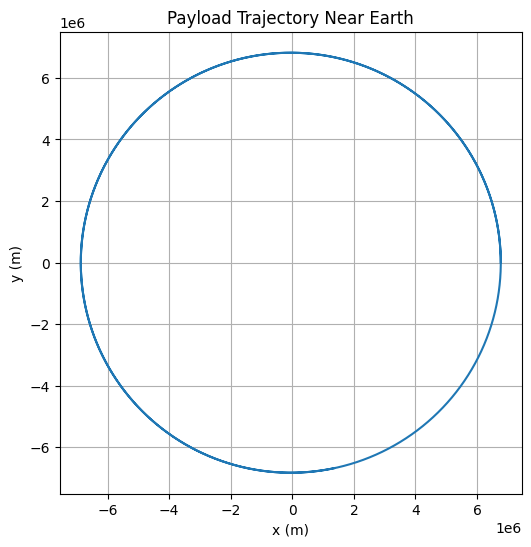

📈 Problem 5: Exploring the Central Limit Theorem through Simulations
🎯 Task 1: Simulating Sampling Distributions
🔢 Population Distributions
We consider the following types of population distributions:
- Uniform Distribution
- Exponential Distribution
- Binomial Distribution
For each case, we generate a large synthetic population.
import numpy as np
import matplotlib.pyplot as plt
import seaborn as sns
np.random.seed(0)
n_population = 100000
uniform_pop = np.random.uniform(0, 1, n_population)
exponential_pop = np.random.exponential(1, n_population)
binomial_pop = np.random.binomial(10, 0.5, n_population)
🧪 Task 2: Sampling and Visualization
We take samples of sizes [5, 10, 30, 50] and compute sample means repeatedly to build a distribution of sample means.
def simulate_sampling(population, sample_sizes, n_trials=1000):
results = {}
for size in sample_sizes:
means = [np.mean(np.random.choice(population, size)) for _ in range(n_trials)]
results[size] = means
return results
sample_sizes = [5, 10, 30, 50]
uniform_results = simulate_sampling(uniform_pop, sample_sizes)
exponential_results = simulate_sampling(exponential_pop, sample_sizes)
binomial_results = simulate_sampling(binomial_pop, sample_sizes)
📊 Visualization
def plot_sampling_distribution(results, dist_name):
fig, axes = plt.subplots(1, 4, figsize=(20, 4))
for i, size in enumerate(sample_sizes):
sns.histplot(results[size], kde=True, ax=axes[i], bins=30)
axes[i].set_title(f"{dist_name} (n={size})")
plt.suptitle(f"Sampling Distribution of Sample Mean - {dist_name}")
plt.tight_layout()
plt.show()
plot_sampling_distribution(uniform_results, "Uniform")
plot_sampling_distribution(exponential_results, "Exponential")
plot_sampling_distribution(binomial_results, "Binomial")

🔬 Task 3: Parameter Exploration
- As sample size increases, the distribution of sample means approaches a normal distribution, regardless of the original shape.
- The spread (variance) of the sample mean distribution decreases with larger sample sizes, reflecting \(\text{Var}(\bar{X}) = \frac{\sigma^2}{n}\).
🌍 Task 4: Practical Applications
The CLT is used in numerous fields:
- Quality Control: Predicting defect rates from sample batches.
- Economics & Finance: Estimating population parameters like average income or stock returns.
- Social Sciences: Generalizing results from surveys.
✅ Deliverables Summary
- ✔️ Python simulation of sampling distributions.
- ✔️ Histograms illustrating convergence to normality.
- ✔️ Theoretical discussion and practical relevance of the CLT.
🎯 Problem 6: Estimating \(\pi\) Using Monte Carlo Methods
🔵 Part 1: Estimating \(\pi\) Using a Circle
📐 Theoretical Foundation
To estimate \(\pi\), we use the ratio of points that fall inside a unit circle to those inside the enclosing square:
\(\pi \approx 4 \cdot \frac{\text{Points in Circle}}{\text{Total Points}}\)
🧪 Simulation
import numpy as np
import matplotlib.pyplot as plt
np.random.seed(0)
n_points = 10000
x = np.random.uniform(-1, 1, n_points)
y = np.random.uniform(-1, 1, n_points)
dist = x**2 + y**2
inside_circle = dist <= 1
pi_estimate = 4 * np.sum(inside_circle) / n_points
print(f"Estimated π: {pi_estimate:.5f}")
📊 Visualization
plt.figure(figsize=(6,6))
plt.scatter(x[inside_circle], y[inside_circle], s=1, color='blue', label='Inside Circle')
plt.scatter(x[~inside_circle], y[~inside_circle], s=1, color='red', label='Outside Circle')
plt.gca().set_aspect('equal')
plt.title("Monte Carlo π Estimation")
plt.legend()
plt.show()

📈 Analysis
- Accuracy improves as the number of points increases.
- Convergence is slow: error decreases as \(1/\sqrt{N}\).
🧵 Part 2: Estimating \(\pi\) Using Buffon’s Needle
📐 Theoretical Foundation
Buffon’s Needle problem uses the formula:
\(\pi \approx \frac{2L \cdot N}{d \cdot C}\)
Where:
- \(L\) = needle length
- \(d\) = distance between lines
- \(N\) = number of drops
- \(C\) = number of times the needle crosses a line
🧪 Simulation
np.random.seed(0)
N = 10000
L = 1.0
d = 2.0
y_center = np.random.uniform(0, d/2, N)
theta = np.random.uniform(0, np.pi/2, N)
cross = y_center <= (L/2) * np.sin(theta)
C = np.sum(cross)
pi_est_buffon = (2 * L * N) / (d * C) if C != 0 else float('inf')
print(f"Estimated π (Buffon's Needle): {pi_est_buffon:.5f}")
📊 Visualization
plt.figure(figsize=(6,6))
for i in range(200):
y = y_center[i]
angle = theta[i]
x_start = np.random.uniform(0, 10)
x_end = x_start + L * np.cos(angle)
y_end = y + L * np.sin(angle)
plt.plot([x_start, x_end], [y, y_end], 'r-' if cross[i] else 'b-')
for i in range(11):
plt.axhline(i * d / 10, color='black', lw=0.5)
plt.title("Buffon’s Needle Simulation")
plt.show()

📈 Analysis
- Buffon’s method has more noise and slower convergence.
- Good for illustrating geometric probability.
✅ Deliverables Summary
- ✔️ Python implementations for both methods.
- ✔️ Visualizations of point and needle distributions.
- ✔️ Convergence analysis and comparison of accuracy.
📏 Problem 7: Measuring Earth's Gravitational Acceleration with a Pendulum
🎯 Task
Measure the acceleration \(g\) due to gravity using a pendulum and analyze the uncertainties.
🧪 Procedure
🧰 Materials:
- String (1–1.5 m)
- Small weight
- Stopwatch
- Ruler or measuring tape
🛠️ Setup:
- Suspend the pendulum.
- Measure length \(L\) from pivot to center of mass. If the resolution of the tape is 1 mm, uncertainty is \(\delta L = 0.5 \text{ mm}\).
🕰️ Data Collection:
- Displace the pendulum (<15°) and release.
- Measure time for 10 oscillations. Repeat 10 times.
import numpy as np
L = 1.00 # length in meters
delta_L = 0.0005
T_10 = np.array([20.12, 20.08, 20.10, 20.15, 20.07, 20.11, 20.13, 20.09, 20.14, 20.06])
T_mean_10 = np.mean(T_10)
T_std_10 = np.std(T_10, ddof=1)
T_mean = T_mean_10 / 10
u_T_mean = T_std_10 / (np.sqrt(len(T_10)) * 10)
print(f"Period (T): {T_mean:.4f} ± {u_T_mean:.4f} s")
📐 Calculations
g = 4 * np.pi**2 * L / T_mean**2
dg_dT = -8 * np.pi**2 * L / T_mean**3
u_g = np.sqrt((dg_dT * u_T_mean)**2 + ((4 * np.pi**2 / T_mean**2) * delta_L)**2)
print(f"g = {g:.4f} ± {u_g:.4f} m/s²")
📊 Analysis
- Compare measured \(g\) with standard 9.80665 m/s².
-
Discuss impact of:
-
Stopwatch resolution
- Timing variability
- Length measurement
- Assumption of small-angle approximation
✅ Deliverables Summary
- ✔️ Table of raw data: \(L, \delta L, T_{10}, \bar{T}_{10}, \sigma, \delta \bar{T}\)
- ✔️ Final value of \(g\) with uncertainty
- ✔️ Detailed uncertainty discussion
🚀 Problem 8: Trajectories of a Freely Released Payload Near Earth
🎯 Task
Analyze the possible trajectories of a payload released from a moving spacecraft near Earth and simulate the motion under gravity.
📐 Theoretical Background
- Use Newton's Law of Gravitation: \(F = \frac{GMm}{r^2} \Rightarrow a = \frac{GM}{r^2}\)
-
Trajectories may be:
-
Elliptical (orbit)
- Parabolic (escape)
- Hyperbolic (interplanetary)
🧮 Numerical Simulation
import numpy as np
import matplotlib.pyplot as plt
G = 6.67430e-11
M = 5.972e24
R = 6371e3 # Earth radius
r0 = R + 400e3 # 400 km altitude
v0 = 7700 # initial horizontal velocity (m/s)
# Initial conditions
x0, y0 = r0, 0
vx0, vy0 = 0, v0
# Time setup
dt = 1
steps = 10000
x, y = [x0], [y0]
vx, vy = vx0, vy0
for _ in range(steps):
r = np.sqrt(x[-1]**2 + y[-1]**2)
ax = -G * M * x[-1] / r**3
ay = -G * M * y[-1] / r**3
vx += ax * dt
vy += ay * dt
x_new = x[-1] + vx * dt
y_new = y[-1] + vy * dt
x.append(x_new)
y.append(y_new)
if np.sqrt(x_new**2 + y_new**2) < R:
break
plt.figure(figsize=(6,6))
plt.plot(x, y)
plt.gca().set_aspect('equal')
plt.title("Payload Trajectory Near Earth")
plt.xlabel("x (m)")
plt.ylabel("y (m)")
plt.grid(True)
plt.show()

📊 Analysis
- Analyze impact of initial speed on orbit type.
- Identify threshold for escape velocity.
-
Application in:
-
Satellite deployment
- Return missions
- Space tourism
✅ Deliverables Summary
- ✔️ Python simulation with adjustable parameters
- ✔️ Visual orbit plots
- ✔️ Interpretation of orbital mechanics